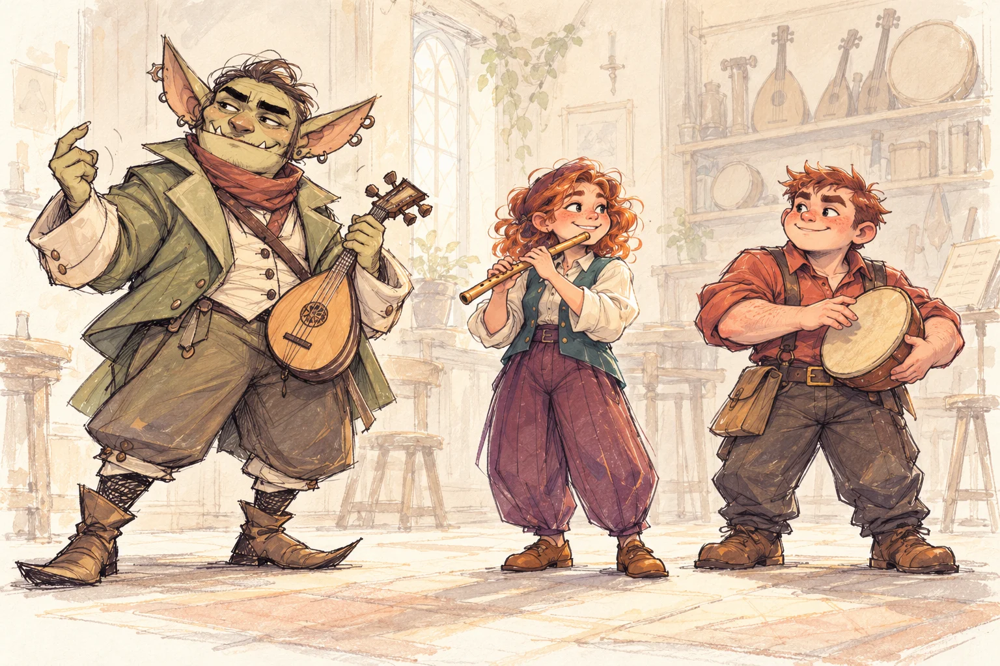
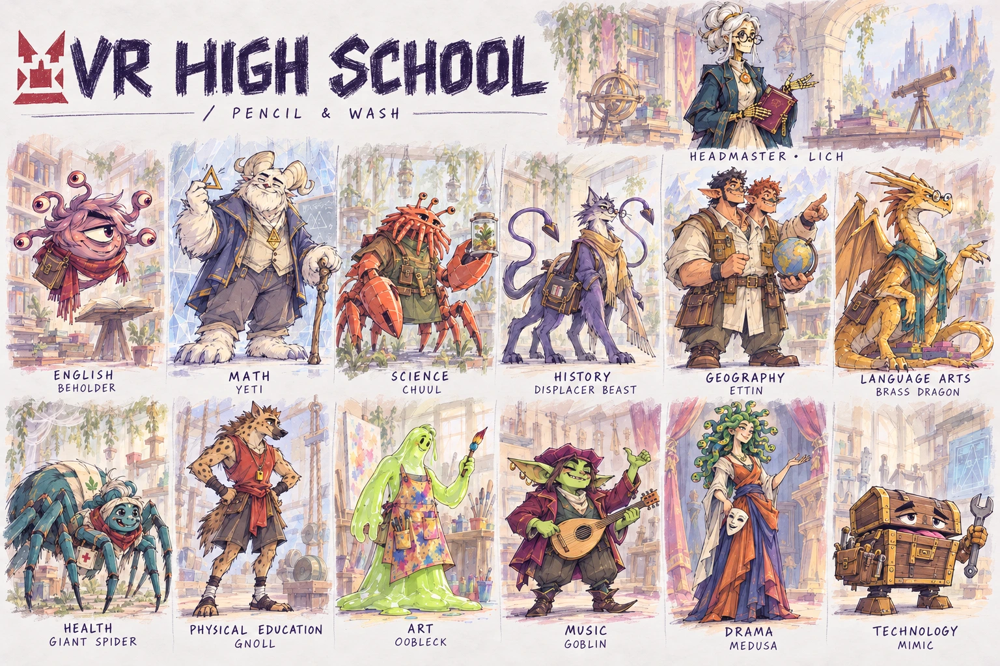

A GAME PITCH BY ARTHUR KLEIN
The Monsters
are the
Teachers.
VRHS is a game concept where students learn from monster teachers through puzzles, experiments and creative projects.
Meet the Goblin Bard.
Music teacher. Rhythm maker. Generous with beginners.

Ink-and-wash concept illustration.
THE VISUAL PROMISE
Art direction for the school
and its teachers
Expressive silhouettes. Designed costumes. Tactile materials. Spaces that make strange creatures feel like people worth knowing.
The direction spans the whole experience: who teaches you, where you learn, how a moment moves, and what accomplishment looks like.
Eight disciplines. One visual identity. ↗A SCHOOL WITH PERSONALITY
A different monster
for every subject
A shared visual language makes room for very different teachers, materials, and places.

THE EXPERIENCE
How a class works
Short, hands-on classes give students a way to try an idea, change it, and leave with something of their own.
- 01
Meet a mentor
Character, gesture and setting introduce the subject.
- 02
Try an idea
Make a choice and see or hear what it changes.
- 03
Make it yours
Revise, perform and share a small accomplishment.
FROM DIRECTION TO PRODUCTION
The production process
Original drawings and visual rules guide the work. ComfyUI helps explore and produce selected media. ElevenLabs gives the teachers a consistent performance voice.
Model cleanup, lighting, UI and feedback carry that same direction into the playable.
Production notebook
Space for a focused process study: the target, an output that missed, the directed correction, and the result in the game.
Workflow started · selected outputs forthcoming
See the current experiments →THE FIRST VERTICAL SLICE
Building the first
music class
The music workshop brings character, environment, performance, interface and magical feedback together. The wider art guide defines how that identity extends across the school.